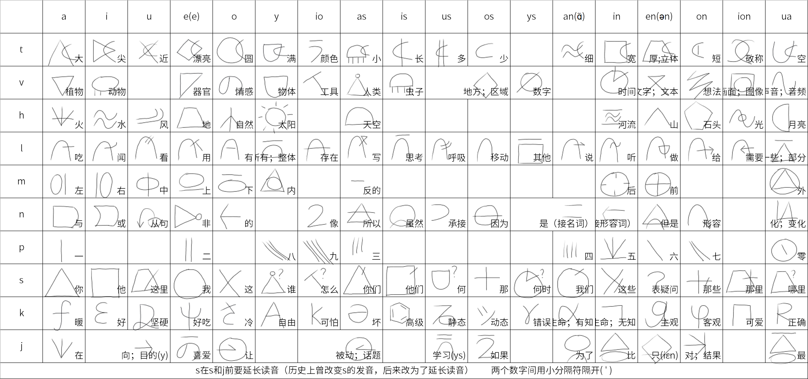

1. 人类语语序为主语-谓语-宾语（SVO），在任何情况下（包括特殊疑问句）都不改变语序。
2. 形容词在修饰词的前方，从句在修饰词的后方。
3. 副词在修饰词的后方，或句首和句末
4. 人类语是分析语，不存在词的形态变化。
5. 时态在句首或句末加时态助词（过去），（未来），（现在）表示。
6. 人类语没有性数格的区分，名词的数量可用（一个），（一些），（多个），（全部）等等来表示。
7. 人类语区分了两个系词：后接名词，后接形容词，这能显著减少歧义。
8. 语法是为了消除歧义而非强制模板，如果不会产生歧义，语法可以宽松一点。
| 字母 | 音值 | 说明 |
|---|---|---|
| m | /m/ | 双唇鼻音 |
| n | /n/ | 齿龈鼻音；作韵尾时使前面元音鼻化 |
| p | /pʰ, p, b/ | 自由变体（送气／不送气／浊） |
| t | /tʰ, t, d/ | 自由变体 |
| k | /kʰ, k, g/ | 自由变体 |
| v | /f ~ v/ | 唇齿擦音，清浊自由 |
| s | /s ~ z/ | 齿龈擦音，清浊自由 |
| h | /h, x, ʁ/ | 三种均允许 |
| l | /l, ɾ/ | 边音或闪音 |
| j | /j/ | 硬腭近音 |
人类语没有复辅音，也没有 /ʃ/ 与 /tʃ/和各种腭化产生的辅音。这是为了降低听力负担而作的设计取舍，代价是 ki，si 的发音略显生硬。
| 字母 | 音值 | 说明 |
|---|---|---|
| a | /a/ | 开前不圆唇 |
| i | /i/ | 闭前不圆唇 |
| u | /u, ɯ/ | 闭后圆唇 |
| e | /e/ | 半闭前不圆唇，类似汉语拼音ei |
| o | /o ~ ɔ/ | 半闭后圆唇 |
| y | /y, ju, jɯ/ | 闭前圆唇，类似汉语拼音ü。若无法发出，可用 /ju/ 代替 |
| 组合 | 音值 | 说明 |
|---|---|---|
| an | /ɑ̃, ɑŋ/ | a 的鼻音化，接近汉语拼音 ang |
| in | /ĩ, in, iŋ/ | |
| en | /en, ən/ | |
| on | /ɔ̃, on ~ ɔn/ | |
| ua | /wa/ | |
| io | /jo ~ jɔ/ | |
| ion | /jon ~ jɔn/ | |
| ys | /ys ~ yz, jus ~ juz/ | |
| as / is / us / os | /as~az/ 等 |
特殊读音：ju = /y, ju, jɯ/；jus = /ys, jus, jɯs/；jen = /jɛn, jen, jən/。
音节结构为 辅音+元音+(韵尾)，其中韵尾只有n与s两个。
s在s与j前要延长读音（历史上曾改变s的发音，后来改为延长读音），用以辨别如tasju与tasy这样相近的组合。

人类语共有145个表意文字与对应的音节。为了降低记忆难度，提高美观性和简易程度，一些字较为抽象，可能减少了表意性。
如果不会使用表意文字，那么使用拉丁化的人类语也是可行的。
字形的构造有明确的象形或借用理据，详见《人类语造字法》。举例：
名词多为"形容 + 中心"结构。tokeva（土豆）= to（圆）+ ke（好吃）+ va（植物）＝圆圆的，好吃的植物。
若形容部分辨识度足够高，可以省略中心词。tislive（大象）字面是"长鼻"，其完整形式tislivevi也成立。词表中用括号表示可省略成分：tislive(vi) 表示 tislive与tislivevi同义。
常用词在创造时尽量限制在三个音节之内，以保证句子中的辨识度。
大部分形容词由名词或字加后缀non构成，non类似汉语形容词末尾的"的"。honon（同样的）= ho（自然）+non。
注意：honon用的是ho的引申义"同样"，这类引申义会增加记忆难度，因此造词时非必要不增加引申义。
大多数动词也是偏正结构。halos（颤抖）＝ ha（火）+ los（移动）；更严谨的说法是 haniolos，即"像火一样动"。
很大一部分动词由形容词，名词或字加 nua（变化）构成：tanua（增大）＝ ta（大）+ nua，字面"大化"。
小部分动词是动宾结构：vome（喜悦）＝ vo（情感）+ me（上），字面"情感上去"。
副词构词较自由，但也更容易产生歧义，造词时应多考虑是否会引起歧义。较安全的一类是以 nio（像）结尾的副词，表示"像……一样地"：tishionnio（如闪电般）＝ tis（长）+ hion（光）+ nio。
用方括号或单引号括起来的字词只表音，不表意。用于外来词，人名，地名，拟声词，叹词。
[kohi]咖啡，[pekin]北京，[nihon]日本，[mama]妈妈，[ha]啊/哈？
[valua]tion瓦卢瓦先生/小姐（tion是敬称，用于人名后，地名用tion/sion/不加）
| 后缀 | 含义 | 例 |
|---|---|---|
| -non | 形容词化（的） | kistanon 重要的 |
| -nua | 动词化（化） | tanua 增大 |
| -nio | 副词化（像……一样地） | tishionnio 如闪电般 |
| -vio | 工具，器械 | hivio 洗衣机 |
| -vos | 场所，地区 | jusvos 学校 |
| -vas | 人，施事者 | kinuavas 医生 |
| -ve | 器官，内部工具 | luve 眼睛 |
| -vi | 动物（类别） | kavi 狗／狼/犬科 |
| -va | 植物（类别） | tava 乔木 |
| -vy | 物质，抽象名词 | jusjonvy 知识 |
| -tua | 容器 | hikutua 水壶 |
| -su | 本身，自己 | sesu 我自己 |
| -kua | 大概……罢 | |
| -sen | 疑问 | |
| -ja- | ……分之…… | pajape 二分之一 |
| -jus | 学科 | hasjus 神学 |
| konkua...non | 可...的 | konkua hanua non 可燃的 |
| maslis...non | 易...的 | maslis hanua non 易燃的 |
| ne...non | 不可...的 | ne hanua non 不可燃的 |
| -no | 属于...的 | sano 你的 |
序数用前缀 vys-：vyspa 第一，vyspape 第十二。
比较级用前缀 jin-，最高级用前缀 jua-，加在形容词前：jintanon 更大的，juatanon 最大的。
分数用 -ja- 中缀：pajape 二分之一，pejapin 五分之二。
化学元素用"性质/希腊词源 + vy"构词。若性质不常见，词源是人名或神名，或超过四个音节，则改用该元素的原子序号构词。
| 单数 | 复数 |
|---|---|
| se 我 | san 我们 |
| sa 你 | sas 你们 |
| si 他／她／它 | sis 他们／她们／它们 |
第三人称不分性别。
| 这 | 那 | 这里 | 那里 | |
|---|---|---|---|---|
| 单数 | so | sos | su | sion |
| 复数 | sin | son | — | — |
特殊疑问词包括：sus什么，sy谁，sua哪里，sys何时，sio怎么/如何，jansus为什么，suspa哪个。
特殊疑问句的语序与陈述句相同（SVO 不变），且最好不要在句末再加 -sen，特殊疑问句句末加sen表示强烈的疑问语气。人类语没有问号，疑问由字 sen 承担。
| lynon全部 | luanon一些 | lysnon其他 |
具体数字代词由具体数字担当，例如pa一个，pe两个，pas三个，pape十二个（注意两个相邻数字间加单引号'）
抽象数字代词由形容词担当，例如tusnon多个，luanon一些，lynon全部，lysnon其他，lys(pa)non另一个，muluanon足够的
| 系词 | 后接 | 例 |
|---|---|---|
| nan | 名词 | so nan pa luave..这是一个部门。 |
| nin | 形容词 | hon nin kunon..石头是坚硬的。 |
两个系词的作用是帮助区分词性，类似西班牙语的ser/estar，但在人类语中它们不承担时体功能。
| 类型 | 构造 | 例 |
|---|---|---|
| 领有 | lo（有） | se lo pa hi..我有一杯水。 |
| 存在 | lio（存在） | jame vyvio lio pa tokeva..桌子上有一个土豆。 |
| 处所 | ja（在） | san ja [tokio].[].我们在东京。 |
| 判断 | nan/nin | so nan pa kyvi..这是一只老鼠。 |
| 字 | 含义 | 说明 |
|---|---|---|
| na | 与 | 标准的与门 |
| ni | 或 | 或门。注意是一般口语的"或"（异或）：若 A，B 同时为真，直接用 na 而非 ni |
| nu | 从句指示词 | 引导后置从句 |
| ne | 非/不 | 否定，置于被否定成分之前 |
| no | 的（从属） | 表示后面的属于前面的 |
| non | 形容（的） | 把字词转为形容词 |
| nas | 所以 | |
| nis | 虽然 | |
| nus | 承接 | 连接两个短句；相当于英语 and，法语 et，日语 て |
| nos | 因为 | |
| nen | 但是 | |
| nua | 化/变化 | |
| nio | 像 | 构成类比副词 |
nus 用来连接两个短句：如果两个句子的主语相同，同时又可能有点递进关系，就用这个词。
hastion kio vasly no kunua, nus jo vasly lojon maspanon lanvio.
,.
神畏惧人类的团结，于是让人类有了不同的语言。
jas 是被动指示词，也可用作话题指示词（类似日语的 は）。
se jas kionua..我受到惊吓。
losnuavyvas jas kovas kasnua..外交官被士兵伤害。
jo（让）表示使役：jo lostua los 驾驶汽车（让车移动）。
pa一，pe二，pas三，pan四，pin五，pen六，pon七，py八，pio九，pua零
两个数字之间用小分隔符隔开（'）如'67。
直接用 papuapua 表示一百有些累赘，因此新增了类科学计数法的说法：
panape(pua) ＝ 一 + 两个零 ＝ 一百pataspin na pas(pua) ＝ 1.5 × 10³
前缀 vys-：vyspa 第一，vyspape 第十二。
中缀 -ja-：pajape 二分之一，pejapin 五分之二。-japanape表示"百分之"。
单位用"kon+属性+vys"构词：kontis(vys) 米，kontaten(vys) 千克，panamaspaskontatenvy 克（千分之一千克）。
有关时间的常用单位使用“ty”（取“沙漏满了”之意）ty 秒，taty 分，hyty 年，vaty 十年，vasty 百年，huaty 月，hoty 天。
主语 → 谓语 → 宾语（SVO）。人类语是分析语，保持 SVO 语序很重要。
kionvi lujon pa kyvi..猫看见了一只老鼠。
se je so hashe na lyvy ja si..我爱这世界与其中的一切。
这一安排不严格要求。
在不严谨的情况下，可以像汉语一样把从句封装成形容词（关系化）。由于人类语形容词在名词前，因此这种方法可以把从句前置：
su lio pe hihe nu ne lio vas..
su lio pe ne lio vas non hihe..
这里有两个没有人的岛屿。
"把 X 给 Y"用 lon（给）：tasvas lon [mama] pa teva.[].孩子给了妈妈一朵花。
用从句指示词 nu，从句放在所修饰的词之后：
su lio pe hihe nu ne lio vas..这里有两个没有人的岛屿。
nus ton len pa tistua nu kua losjon has..试图建造一座通往天际的高塔。
nu 引导的从句可直接作主语或宾语:
kasvas tyjon jen lio pa menvio, nus nan kivas ne len lyvy.
,.
恶人获胜的唯一条件就是好人袖手旁观。
在不严谨的情况下，可以像汉语一样把从句封装成形容词（关系化）。由于人类语形容词在名词前，因此这种方法可以把从句前置：
su lio pe hihe nu ne lio vas..
su lio pe ne lio vas non hihe..
这里有两个没有人的岛屿。
在陈述句结尾加表疑问的助词 sen。
sa losjon [tupelin] sen.[].你到都柏林了吗？
阅读时句末语调上扬。
语序不变，只把疑问词替换到相应位置，且句末一般不加 sen。
| 疑问词 | 含义 | 例 |
|---|---|---|
| sus | 什么 | so nan sus?.这是什么？ |
| sy | 谁 | sy nan pa kiskannon tasvas?.谁是一个香香软软的小蛋糕？ |
| sua | 哪里 | sa losjon sua?你去了哪里？ |
| sys | 何时 | |
| sio | 怎么/如何 | |
| jansus | 为什么 | |
| suspa | 哪个 |
疑问词与 sen 连用可表示"究竟/到底"：sa losjon sua sen..你到底去了哪里？
mavin 过去，muvin 现在，mivin 未来。放在句首或句末，不改变动词。
人类语没有严格的完成时，若一定要表达完成时，可在句末加tyvin 结束。
| 词 | 含义 |
|---|---|
| tusvin(nio) | 总是 |
| tisvin(nio) | 经常 |
| tosvin(nio) | 有时/偶尔 |
| neliovin(nio) | 从不 |
| masvin(nio) | 绝对从不 |
| vinly | 每次 |
| penio | 再次/重新 |
| manio | 仍然 |
| vinjon | 直到（时间） |
| vinkus | 自从（时间） |
| jamiso | 从此 |
vin（时间）在复合词中承担"次，回"的量词功能：pa vin 一次，pe vin 两次，vyspa vin 第一次。
ma- 前缀表示早期/幼年：mavas 婴儿，mavatio 蝌蚪。
时段名词：tastavin 青少年时期，tavin 成人时期，tustavin 老年时期。
四季：vavin 春天，kavin 夏天，kinvin 秋天，kovin 冬天。
昼夜：hyvin 白天，huavin 晚上/夜间，hymovin 清晨/上午，hymevin 中午/下午。
人类语中时间被看作一个箭头向右的数轴，用"左右"代替"前后"：ma（左）→ 过去，mu（中）→ 现在，mi（右）→ 未来。因此 mavin/muvin/mivin 与 milos（向右走）同构。
| 词 | 含义 | 例 |
|---|---|---|
| jos | 如果 | jos san le kankin..如果我们按下按钮 |
| jos ... nus ... | 如果……那么…… | |
| jen ... nus ... | 只有……才…… | |
| jajen | 只要 | |
| jakua | 尽管/即使 | san losju kivos jakua, san ne masliojon.,.即使我们去了水草丰美之地，我们也不会消失。 |
| jamua | 除了/除非 | ho nin tenon, vavos jamua.,.大自然很美丽，除了森林。 |
| maskon(nio) | 无论 | maskon se losjon sua..无论我去哪里。 |
| vyjon (so) | 既然（如此） | vyjon so, se losjon [kelakevo](sion).,[].既然如此，我就去了克拉科夫。 |
| nis ... nen ... | 虽然……但是…… | |
| nos ... nas ... | 因为……所以…… |
| 词 | 含义 |
|---|---|
| nus | 承接（于是，那么） |
| nas | 所以 |
| nos | 因为 |
| nis | 虽然 |
| nen | 但是 |
| nusly | 总之/无论如何 |
| jamiso | 从此 |
| 词 | 含义 | 例 |
|---|---|---|
| jen | 只 | jen lio pa menvio 只有一个条件/前提 |
| ly | 都/全部 | san ly la pa hi. . 我们都喝水。 |
| tusjen | 甚至/连……都 | tusjen si jusjon sa no lenvy. . 连他都知道你的工作。 |
| masnus | 反而/却 | masnus si lonlion se. . 反而他帮助了我。 |
| honon(nio) | 同样的/也 |
如果可能存在歧义，焦点算子应紧贴被强调的成分并置于其前：se hononnio la pa hi （我也喝水，焦点在"我"）。
-kua 大概……罢 -sen 吗/呢 kennio 一定/必须/显然 konkuanio 可能/大概 konkuation 请/劳驾